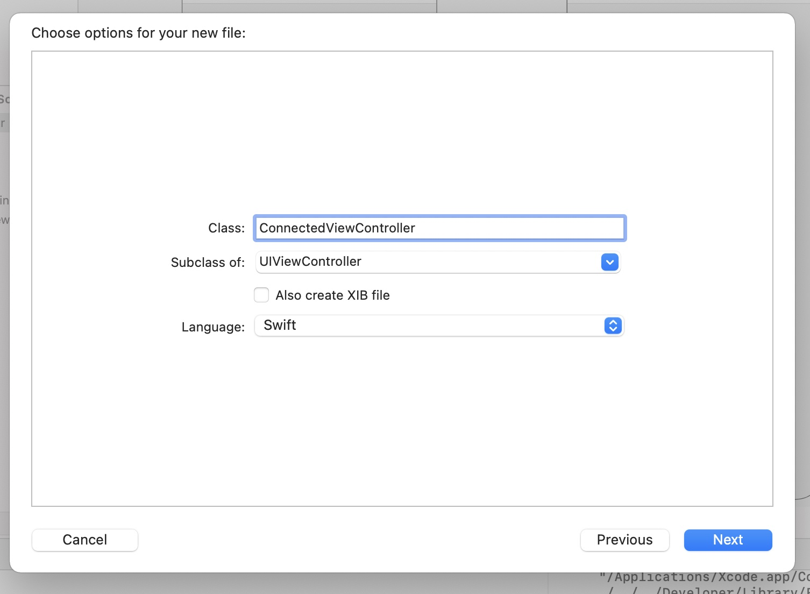

View on GitHub
View on GitHub
 Tutorial Reference
Tutorial Reference
Tutorial
In this tutorial you will learn how to integrate the Jacquard SDK into an iOS app, scan and connect to a tag, send commands and respond to notifications.
You will need:
- Some Jacquard gear (see What do I need to get started).
- An iOS device running iOS 13 or later (since the Jacquard SDK uses Bluetooth to connect to your tag the simulator won’t work).
- An Apple developer account (either via the Apple Developer Program or Sign in with your Apple ID.
This tutorial will describe the following topics to build a basic app that connects to a Jacquard tag and garment:
- Prepare your Jacquard Tag
- Create a new Xcode project
- Configure Bluetooth access and signing
- Integrate Jacquard SDK using Swift Package Manager
- Add the scanning table view
- Displaying the advertised tags and connecting the TableView Delegate
- Displaying already connected tags
- Adding the second ViewController
- Connected tags
- Sending commands
- Observing Notifications
- Updating Firmwares
1. Prepare your Jacquard Tag
If yo have just opened a new retail Jacquard product, your tag probably needs a firmware update (and perhaps charging).
Perform the steps in the Updating Firmware page before continuing.
Hopefully you have updated your Tag and unlinked the Tag from the Jacquard App.
In addition to this, to ensure the smoothest path through this tutorial, go to iOS Bluetooth settings, find the entry for your Jacquard Tag and choose “Forget this device”.
2. Create a new Xcode project
In Xcode, create a new iOS App project, selecting UIKit and Storyboard UI.
File menu -> New -> Project

3. Configure Bluetooth access and signing
Since the Jacquard SDK uses Bluetooth to connect to your tag, it is important to set up signing and entitlements correctly. This setup can be done in the Target’s “Signing and Capabilities” tab. The easiest way to manage signing and capabilities (assuming you are correctly logged into your developer account in Xcode’s preferences) is to leave “Automatically manage signing” checked, and then click the “+ Capability” button to find and add the Bluetooth capability.

In the dialog that appears after clicking “+”, search for and select “Background Modes”.

Out of the Background modes that appear, check “Uses Bluetooth LE accessories”.
You will also need to add the NSBluetoothAlwaysUsageDescription key
to Info.plist. Open Info.plist in the Project Navigator, and add a
description string with that key.
4. Integrate Jacquard SDK using Cocoapods
The easiest way to integrate the Jacquard SDK is using Cocoapods dependency management. If you are not familiar with Cocoapods usage and installation, see these instructions.
In the terminal, navigate to the directory containing your project’s .xcodeproj file.
Run this command:
pod init- A file named Podfile would be created in the directory.
Open the Podfile and make the following three changes:
- Uncomment the
platformdirective and set to13.0:ruby platform :ios, '13.0' - Inside the
target, add:ruby pod 'JacquardSDK' Your entire
Podfileshould now look something like this:platform :ios, '13.0' target 'Jacquard Tutorial' do use_frameworks! pod 'JacquardSDK' end
- Uncomment the
Save the podfile, and in terminal run the following command:
pod install
Xcode will download all the relevant files and integrate them with
your Xcode project. If your project is already open in xcode close it
and open the generated .xcworkspace file. (If you get an error
indicating that JacquardSDK could not be found, your CocoaPods cache
may be out of date - try pod install --repo-update instead.)
5. Add the scanning table view
The app you will make has two screens. The first is a tableview listing any nearby advertising tags. The second is a screen with a few simple labels and buttons which you will connect to Jacquard functions.
First lets set up the Scanning view controller.
- Select
Main.storyboardin the Project Navigator - Add a table view by
- opening the Object Library (View menu -> Show Library, or Command-Shift-L)
- find table view, and drag into the view controller.
- Resize the table view to fill the view controller and add appropriate constraints in the usual way.
- Your storyboard should look something like this:
- The one last step to do before you start writing code is to connect
the table view to an outlet in your view controller.
- Option-click
ViewController.swiftin the Project Navigator to open it alongside the storyboard - Control-drag the table view into the ViewController class body to create an outlet (call it tableView)
- Option-click
You’re now ready to start coding!
First, import two libraries into ViewController.swift, JacquardSDK
and Combine.
Keeping app state correct in the face of changing connection conditions etc. can be challenging. To make this easier and safer, the Jacquard SDK leans heavily on Apple’s Combine* Functional Reactive Programming framework. You can read more about this approach in API Overview.
With the tableView outlet and these two imports added, your
ViewController.swift should look like this:

If you see an Xcode error that
JacquardSDKdoes not exist, you may need to build (Cmd-B) the project once for Xcode to notice the new libraries that CocoaPods has added.
The JacquardManager protocol (and its concrete implementation,
JacquardManagerImplementation) is the entry point to scanning for,
and connecting to, tags. Since for this demo you don’t need to supply
a custom queue or any options, creating the manager is as simple as:1
let jqManager: JacquardManager = JacquardManagerImplementation(publishQueue: .main, options: [:])
Add this as a property to the ViewController class.
Since this code will make use of a number of Combine publishers, you
need to store references to some AnyCancellable instances. Make that
easy with a simple extension, and create an array property in
ViewController
extension AnyCancellable {
func addTo(_ array: inout [AnyCancellable]) {
array.append(self)
}
}
class ViewController: UIViewController {
var observations = [AnyCancellable] ()
...
}
This tutorial app will start scanning as soon as possible. If you’ve
used Apple’s CoreBluetooth before, you will know that you need to
wait for Bluetooth to become available before that will work. The
Jacquard SDK exposes the state you need as a Combine publisher, so
you can start scanning as soon as the state becomes
.poweredOn.2 Add this snippet to viewDidLoad():
jqManager.centralState.sink { [weak self] state in
switch state {
case .poweredOn:
try! self?.jqManager.startScanning()
print("Scanning...")
default:
break
}
}.addTo(&observations)
Once scanning has commenced, any tags that are discovered will be
available, again via a Combine publisher, from the advertisingTag
var. To check everything is working so far, just print out found
tags. Again, add this to viewDidLoad():
jqManager.advertisingTags.sink { advertisedTag in
print("Found advertising tag \(advertisedTag.displayName)")
}.addTo(&observations)
Before we build and run, check your ViewController.swift looks
something like this:
import UIKit
import Combine
import JacquardSDK
extension AnyCancellable {
func addTo(_ array: inout [AnyCancellable]) {
array.append(self)
}
}
class ViewController: UIViewController {
var observations = [AnyCancellable] ()
@IBOutlet weak var tableView: UITableView!
let jqManager: JacquardManager = JacquardManagerImplementation()
override func viewDidLoad() {
super.viewDidLoad()
jqManager.advertisingTags.sink { advertisedTag in
print("Found advertising tag \(advertisedTag.displayName)")
}.addTo(&observations)
jqManager.centralState.sink { [weak self] state in
switch state {
case .poweredOn:
try! self?.jqManager.startScanning()
print("Scanning...")
default:
break
}
}.addTo(&observations)
}
}
Now make sure your real iOS device is plugged in and selected in Xcode as the run target. Click the Build and Run button, and your device should show a system dialog saying “Jacquard Tutorial” Would like to Use Bluetooth. Tap “OK”.
You should now see Scanning... in your Xcode output (you can ignore
any message about centralManager:willRestoreState: for now).
Put the Jacquard Tag into advertising mode
Press and hold the button on your tag for 3 or 4 seconds (it can be a
little tricky to get right, you should hear and feel a click). The LED
on the tag will start pulsing, and you should see a log entry in Xcode
Found advertising tag 01ZK (your tag’s identifier will be
different).
6. Displaying the advertised tags and connecting the TableView Delegate
Here we are using a standard iOS approach to display the found tag in
a cell and respond to a tapped cell. Here is the full code -
copy/paste to replace the entirety of ViewController.swift:
import UIKit
import Combine
import JacquardSDK
extension AnyCancellable {
func addTo(_ array: inout [AnyCancellable]) {
array.append(self)
}
}
struct TagCellModel: Hashable {
var tag: ConnectableTag
static func == (lhs: TagCellModel, rhs: TagCellModel) -> Bool {
return lhs.tag.identifier == rhs.tag.identifier
}
func hash(into hasher: inout Hasher) {
tag.identifier.hash(into: &hasher)
}
}
class TagCell: UITableViewCell {
static let reuseIdentifier = "TagCell"
func configure(_ tagCellModel: TagCellModel) {
textLabel?.text = tagCellModel.tag.displayName
}
}
class ViewController: UIViewController {
enum Section {
case advertisedTags
}
var observations = [AnyCancellable] ()
var advertisedTags = [AdvertisedTag]()
var diffableDataSource: UITableViewDiffableDataSource<Section, TagCellModel>!
@IBOutlet weak var tableView: UITableView!
let jqManager: JacquardManager = JacquardManagerImplementation(publishQueue: .main, options: [:])
override func viewDidLoad() {
super.viewDidLoad()
tableView.delegate = self
tableView.register(TagCell.self, forCellReuseIdentifier: TagCell.reuseIdentifier)
diffableDataSource = UITableViewDiffableDataSource(tableView: tableView) { (tableView, indexPath, tagModel) -> UITableViewCell? in
let cell = tableView.dequeueReusableCell(withIdentifier: TagCell.reuseIdentifier, for: indexPath) as! TagCell
cell.configure(tagModel)
return cell
}
tableView.dataSource = diffableDataSource
jqManager.advertisingTags.sink { [weak self] advertisedTag in
print("Found advertising tag \(advertisedTag.displayName)")
guard let self = self else { return }
self.advertisedTags.append(advertisedTag)
self.updateDataSource()
}.addTo(&observations)
jqManager.centralState.sink { [weak self] state in
switch state {
case .poweredOn:
try! self?.jqManager.startScanning()
print("Scanning...")
default:
break
}
}.addTo(&observations)
}
func updateDataSource() {
let models = self.advertisedTags.map { TagCellModel(tag: $0) }
var snapshot = NSDiffableDataSourceSnapshot<Section, TagCellModel>()
snapshot.appendSections([.advertisedTags])
snapshot.appendItems(models, toSection: .advertisedTags)
self.diffableDataSource.apply(snapshot)
}
}
extension ViewController: UITableViewDelegate {
func tableView(_ tableView: UITableView, didSelectRowAt indexPath: IndexPath) {
jqManager.stopScanning()
// Here we will connect to the tag.
}
}
You should be able to build and run and see advertising tags in the table view (you will need to press and hold the tag button again - Jacquard tags stop advertising after 60 seconds).
7. Displaying already connected tags
When the tag is paired and connected to iOS, it will no longer advertise. This means we need to use a different mechanism to obtain a connection object for an already-connected tag. The view controller will be updated to display those already-connected tags as well as advertising tags.
Add an instance variable to the view controller to keep a consistent
view of pre-connected tags, and also add a new entry to the Section
enum for the table view:
class ViewController: UIViewController {
enum Section {
case advertisedTags
case preConnectedTags
}
var preConnectedTags = [PreConnectedTag]()
//...
}
Like most CoreBluetooth functions, we can’t read the list of connected
tags until the CBCentralState is .poweredOn, so in viewDidLoad
we will update the central state observation to also update our list
of tags:
jqManager.centralState.sink { [weak self] state in
switch state {
case .poweredOn:
guard let self = self else { return }
self.advertisedTags.append(advertisedTag)
//
// *** The following line is added
//
self.preConnectedTags = self.jqManager.preConnectedTags()
// ***
self.updateDataSource()
try! self.jqManager.startScanning()
print("Scanning...")
default:
break
}
}.addTo(&observations)
Note that since reading pre-connected tags from CoreBluetooth is synchronous only, this method won’t automatically update if a nearby tag wakes up and connects while the view is on screen. In a real app you may wish to persist a list of known tag UUIDs - the sample app is an example of doing that.
Finally the updateDataSource() method needs to be updated to also
display these tags in a new section:
func updateDataSource() {
let advertisedModels = advertisedTags.map { TagCellModel(tag: $0) }
let preConnectedModels = preConnectedTags.map { TagCellModel(tag: $0) }
var snapshot = NSDiffableDataSourceSnapshot<Section, TagCellModel>()
snapshot.appendSections([.advertisedTags, .preConnectedTags])
snapshot.appendItems(advertisedModels, toSection: .advertisedTags)
snapshot.appendItems(preConnectedModels)
self.diffableDataSource.apply(snapshot)
}
8. Adding the second ViewController
First create an empty View Controller class.
- Right-click on the
Jacquard Tutorialfolder icon in the Project Navigator and selectNew File... - Select Cocoa Touch Class

- Click Next
- Name the class
ConnectedViewController, subclass ofUIViewController.  - Click Next and save
The storyboard needs the second view controller, but first we need to
embed our first view controller in a NavigationController.
- Return to
Main.storyboard - Select “View Controller”
- Choose the menu option Editor > Embed in > Navigation Controller

Now you can add the second view controller.
- Using the Object library again (Command-Shift-L), drag a blank
UIViewControlleronto a blank area in the canvas. - Select the new view controller, and in the Inspector, set the class
to the
ConnectedViewControllerclass created above. - Also set the “Storyboard ID” to
connectedViewController
Your Storyboard should now look something like this:
We will add some real UI later, but first lets connect the tag and the view controller together.
9. Connected tags
Connecting to tags is an important step that is fully documented in Connecting to Tags.
Sufficient for this tutorial, the
connect()methods onJacquardManagerreturn a Combine Publisher which publish a sequence ofTagConnectionStatestates, including a number of pre-connection states,.connected()and.disconnected(Error?).The disconnected state should happen extremely rarely - in normal disconnection scenarios (for example the tag goes out of Bluetooth range), the
JacquardManagerinstance will automatically attempt to reconnect, and will (eventually) publish a further.connected()state. In cases where the tag is near the limit of Bluetooth range, it is common for a lot of.connected()states to be published in relatively quick succession.Relying on the Combine Publishers as shown in this tutorial and the sample app will ensure your app is always using the most recent connected tag instance - resist the temptation to store a
ConnectedTagin an instance variable.One case that is not handled for you is when Bluetooth is turned off (and possibly back on). You should observe the other states of
jqManager.centralStateto respond to this.
Using a connected tag
First, let’s update ConnectedViewController to store the
relevant connection publisher, and set the title by observing the
tag’s name. As above, the expected pattern is to interact
with ConnectedTag instances always from the connection publisher (to
ensure you are never using a stale/disconnected instance).
Replace the entire contents of ConnectedViewController.swift with
the following code block:
import UIKit
import JacquardSDK
import Combine
class ConnectedViewController: UIViewController {
var tagConnectionPublisher: AnyPublisher<TagConnectionState, Error>?
var observations = [AnyCancellable] ()
override func viewDidLoad() {
super.viewDidLoad()
tagConnectionPublisher?.compactMap { connectionState -> ConnectedTag? in
switch connectionState {
case .connected(let tag):
return tag
default:
print("Not connected, in connection state: \(connectionState)")
return nil
}
}.flatMap {
$0.namePublisher
}.sink(receiveCompletion: { error in
print("Unrecoverable connection error: \(error)")
}, receiveValue: { [weak self] name in
self?.title = name
}).addTo(&observations)
}
}
This is quite a long chain of Combine operators, and it is common to want simple access to a connected tag. We will look at tidying this up later.
Connecting to the tag
Returning to the original ViewController.swift file, we will update
tableView(_, didSelectRowAt:) to connect to the selected tag and
present the second view controller.
extension ViewController: UITableViewDelegate {
func tableView(_ tableView: UITableView, didSelectRowAt indexPath: IndexPath) {
jqManager.stopScanning()
guard let model = diffableDataSource.itemIdentifier(for: indexPath) else {
return
}
guard let nextVC = storyboard?.instantiateViewController(identifier: "connectedViewController")
as? ConnectedViewController
else {
preconditionFailure()
}
nextVC.tagConnectionPublisher = jqManager.connect(model.tag)
navigationController?.pushViewController(nextVC, animated: true)
}
}
Congratulations, your app will now show an advertising tag, connect to it, and set the view controller title. Try it now (and don’t forget to press the tag’s button for four seconds to restart pairing mode).

10. Sending commands
Now we’ll explore sending commands to the tag, in this case
PlayLEDPatternCommand (commands are documented in the
Commands documentation).
But first, lets tidy up that long Combine operator chain by creating a
simpler publisher. Normally we’re only interested in getting access to
the latest ConnectedTag. Sometimes we want to keep observing the
latest (such as above where any name updates will continue to update
the View Controller title even after reconnections). Often we want
just the current or next connected tag for a one-time use (such as to
play an LED pattern). We can use Combine operators to easily achieve
both.
When the tagConnectionPublisher instance variable is set in
ConnectedViewController.swift, we will also create the derived
publishers we want. Switch to ConnectedViewController.swift, add
a tagPublisher property and set it by adding a didSet observer:
var tagPublisher: AnyPublisher<ConnectedTag, Never>?
var tagConnectionPublisher: AnyPublisher<TagConnectionState, Error>? {
didSet {
tagPublisher = tagConnectionPublisher?
.catch {
// Connection failures will be handled elsewhere.
Just<TagConnectionState>(TagConnectionState.disconnected($0))
}.compactMap { connectionState -> ConnectedTag? in
switch connectionState {
case .connected(let tag):
return tag
default:
print("Not connected, in connection state: \(connectionState)")
return nil
}
}.eraseToAnyPublisher()
}
}
For any functionality where knowing the precise state of connection is
important (for example displaying connection status, or enabling UI),
the tagConnectionPublisher can be used. For most common cases the
simpler tagPublisher can be used. Let’s change our title update code
to use this new publisher.
override func viewDidLoad() {
super.viewDidLoad()
tagPublisher?
.flatMap { $0.namePublisher }
.sink { [weak self] name in self?.title = name }
.addTo(&observations)
}
Much tidier. Now lets add a button to send an LED command to the tag (some Jacquard garments also have LEDs which can be addressed independently, but here we will use the tag’s built-in LED).
Adding the button
- Edit
Main.storyboardagain - Drag a UIButton from the Object Library onto “Connected View Controller”
- Set the button’s title to “Play LED Pattern”
- Apply constraints to locate the button wherever you wish
- Option-click
ConnectedViewController.swiftin the project navigator to open it alongside the storyboard, and control-drag from the button to create a target/action method - Name the method
playLEDTap
Sending a command to a tag has three phases, constructing the command request instance, sending it to the tag, and finally waiting for the response (or error).
Like all other asynchronous tasks in the Jacquard SDK, sending
commands creates a Combine publisher. Some commands publish a return
value (like BatteryStatusCommand), others like PlayLEDCommand
publish Void for success, or may fail with an error. Sending the
command is achieved using the enqueue(_:retries:) method on
ConnectedTag.
Some commands, as in this case, require a Component argument. They
are documented more thoroughly in the Components
documentation, but in essence a Component represents a currently
connected piece of Jacquard gear. The tag has a built-in Component
(which is always available) and Jacquard gear (like a jacket or
backpack) may be connected to the tag. Each component has different
capabilities (which you can introspect using the capabilities
method), but we know that the tag’s built-in component always has an
LED.
Your playLEDTap method should look something like:
@IBAction func playLEDTap(_ sender: Any) {
let blue = PlayLEDPatternCommand.Color(red: 0, green: 0, blue: 255)
let red = PlayLEDPatternCommand.Color(red: 255, green: 0, blue: 0)
let yellow = PlayLEDPatternCommand.Color(red: 255, green: 255, blue: 0)
let green = PlayLEDPatternCommand.Color(red: 0, green: 255, blue: 0)
let off = PlayLEDPatternCommand.Color(red: 0, green: 0, blue: 0)
let frames = [blue, red, yellow, blue, green, red, off].map {
PlayLEDPatternCommand.Frame(color: $0, durationMs: 250)
}
tagPublisher?
.prefix(1)
.flatMap { tag -> AnyPublisher<Void, Error> in
let commandRequest = try! PlayLEDPatternCommand(
frames: frames,
durationMs: 6000,
component: tag.tagComponent)
return tag.enqueue(commandRequest)
}.sink(receiveCompletion: { error in
print("Failed to play LED pattern: \(error)")
}, receiveValue: {
print("Played LED pattern successfully")
}).addTo(&observations)
}
The .prefix(1) operator is important here. It means take the first
connected tag and then stop. If we didn’t apply that here, then if the
tag disconnected and reconnected, the led pattern would be played
again!
Try building and running your app - you should be able to make the LED play this pattern.
11. Observing Notifications
Commands are initiated by the app and sent to the tag (possibly with a response). Notifications on the other hand originate from the tag at any time. As you may have guessed, notification subscriptions come in the form of a Combine publisher.
Instead of using the
ConnectedTaginstance directly, there is a small extra step to get aSubscribableTag. This is an important part of how State Restoration is handled, which is explained in theConnectedTagdocumentation.
First add a method to ConnectedViewContrller which will do something
useful with a gesture notification. In this case we will define
“useful” to mean printing out to the console:
func createSubscriptions(_ tag: SubscribableTag) {
let gestureNotificationRequest = GestureNotificationSubscription()
tag.subscribe(gestureNotificationRequest)
.sink { gesture in
print("Observed gesture: \(gesture)")
}.addTo(&observations)
}
Now call this method with a SubscribableTag instance whenever the
tag connects or reconnects. Place this code in the viewDidLoad()
method of ConnectedViewController:
tagPublisher?
.sink { [weak self] tag in
guard let self = self else { return }
tag.registerSubscriptions(self.createSubscriptions)
}.addTo(&observations)
This is the final build and run for this tutorial. Once you have connected to the tag again, insert the tag into your Jacquard gear and perform a brush, double tap or other gesture and you will see the gesture logged into the Xcode console.
You have now successfully integrated the Jacquard SDK and learned how to connect, send commands and observe notifications. There’s more to the SDK which you can see demonstrated in the sample app and read about in the SDK documentation (see the table of contents on the left side of this page).
12. Updating Firmwares
Before using any Jacquard SDK core api, it is always recommended to ensure that you have the latest available firmware. After your tag is paired, next ideal step should be to check for firmware update by calling Jacquard SDK firmware api’s which are backed up by Jacquard cloud. Updating firmware is a 3 step process -
1. Check if update available
This step would need internet connectivity as it calls Jacquard cloud api to see if any firmware updates are available. If updates are available for your current firmware, sdk will start downloading firmware binary implicitly. Updates can be of 2 types.
- Mandatory - Firmware update is required.
- Optional - Firmware update is optional and can be skipped.
- None - If there is no updates available.
2. Apply updates
Jacquard sdk will transfer downloaded firmware binary to the tag using bluetooth connection. This step might take a while depending on the size of downloaded firmware binary.
3. Execute updates
In this step, Jacquard sdk will install the firmware binary on the tag. You can skip this step by passing
shouldAutoExecute=true in Apply updates (Step 2).
The control for executing the installation is provided as a separate API, because the Tag will reboot after installation, As a general practice, you should inform the users that this will happen.
Note: This step is not required in case of loadable module.
Let’s start with the implementation. It’s pretty much straight forward.
Update tag / interposer firmware
##### 1. Check if update available -
To check if update is available for both tag and interposer, insert your tag into your gear and use below piece of code -
tag.firmwareUpdateManager.checkUpdates(forceCheck: false)
.sink { completion in
if case .failure(let error) = completion {
print("Firmware update error: \(error)")
}
} receiveValue: { updates in
print("Available firmware updates: \(updates)")
}.addTo(&observers)
This code will return an array of DFUUpdateInfo for each input component. Check the value for
DFUUpdateInfo.dfuStatus to know what type of firmware update is available. It could be either
mandatory or optional or none. forceCheck boolean is used by the sdk to decide if data would be retrieved
from cloud or cached info should be returned.
It’s advised to use forceCheck as false, because it allows SDK to decide the best source of information.
2. Apply updates -
Here, Jacquard sdk will transfer downloaded firmware binary from mobile to the tag. You need to use an array of
DFUUpdateInfo which you have received in previous step.
tag.firmwareUpdateManager.applyUpdates(updates, shouldAutoExecute: true)
.sink { state in
switch state {
case .idle: break
case .preparingForTransfer: break
case .transferring(let progress):
print(progress)
case .transferred: break
case .executing: break
case .completed: break
case .error(let error):
print(error)
}
}.addTo(&observers)
FirmwareUpdateState will give you the exact status of the operation. When Jacquard sdk
starts transferring firmware binary to the tag. i.e. state is transferring, you can track the
transfer progress using below code:
switch state {
case .transferring(let progress):
print(progress)
}
You can use shouldAutoExecute=true to install the updates automatically, otherwise you will need to call
executeUpdates() api explicitly after when state is changed to transferred.
FirwareUpdateState.error() will give you the error occurred in this step.
3. Execute updates -
This is the last step in firmware update in which Jacquard sdk instructs tag to install the firmware
binary transferred in previous step. This step is not required if you are sending shouldAutoExecute=true
in applyUpdates() api. If you are updating tag firmware, tag will reboot during this step.
tag.firmwareUpdateManager.executeUpdates()
FirmwareUpdateState returned by this api can either be executing or completed.
The eagle eyed may notice that it would be simpler to use the default arguments. Unfortunately there is currently an issue with the way the Swift binary
swiftinterfacefile is generated for Objective-C ABI classes that meansJacquardManagerImplementation()would compile but generate a runtime exception. This will be fixed in the next release. #3. ↩As always, in a real app try to avoid using the
try!force-try. ↩